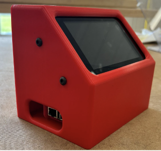

Engineering Design Project
Rhythm Training Device
A practice device that presents a rhythm, records a musician's performance, and scores how closely they matched it. The goal is to help musicians develop their sense of tempo without relying on a metronome.
- Purpose
- Practice tempo and rhythm
- Software
- Onshape, VS Code
- Materials
- ABS Platic, Raspberry Pi 5
- Fabrication
- 3D Printing, Soldering

Overview
My senior design project in high school.
Process
Me and my team began by searching for a specific problem to address. As musicians, we determined that people often rely on external sources of rhythm while playing, which can lead to disagreement within the music.
We created a portable device that could be taken with a musician into a practice room. The device takes in a MIDI input (like a keyboard or drum pad) and displays a psedo-randomly generated rhythm (as sheet music) for the user to play. The device counts the user in and records their playing. It then evaluates how they preformed and displays an error graph over time. This can be used to identify and improve specific types of rhythms.
Link to repository →